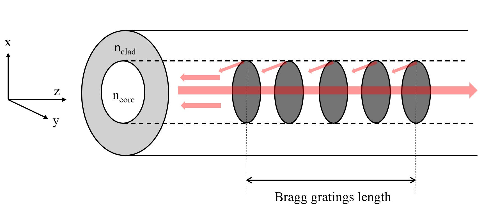

Optical fiber sensors#
TYPE 1 - Fiber Bragg Grating (FBG)#
FBG 원리#

격자기반 센서는 광섬유 코어에서의 격자 영향을 감지한다. 격자는 협대역 필터 또는 반사거울과 같은 역할을 하게 되어, 브래그 파장은 광섬유 주위의 온도, 변형, 진동 등의 변화에 따라 아래와 같이 변화한다.
온도에 따른 브래그 파장의 변화량은 다음과 같다. $\( \frac{\Delta \lambda_B}{\lambda_B} = k_\epsilon \epsilon + k_T \Delta T \)$
여기서, \(k_\epsilon\) 은 FBG센서의 변위계수, \(k_T\) 는 온도 계수.
FBG 제작#
UV 패턴을 조사해서 굴절율에 규칙적이고 영구적인 변화를 유발.
티탄 사파이어 fs레이저를 조사해서 제작한다는 연구사례 다수 있음 .
FBG 이점#
오퍼레이션 파장필터 혹은 협대역 미러로 사용할수있다. 또한 방향성도 없어서 어떤 방향이라도 모두 작용할수있다.
스트레인 센서 스트레치 혹은 컴프레스 작용을 받을때 격자의 주기가 변할수있다. 따라서 브래그 파장도 시프트 한다.
온도 센서 마찬가지로, 온도가 변하면 격자의 주기가 변할수있다.
멀티플렉싱 가능 한개의 파이버의 여러개의 센서를 만들수있다. 각 센서는 고유한 반사 파장을 갖도록 설계되었기때문에, 다중화 환경에서 어느 위치에서 변형이 발생했는지 정확히 구분한다. 온도와 스트레인 외에도, 압력, 가속도, 변위 등의 파라미터 측정에 적합하도록 튜닝할수있다. 또한 마이너한 로스와 크로스토크가 없는것도 장점이다.
FBG 광원#
ASE 광원 (Amplified Spontaneous Emission), SLD (Superluminescent Diode), 파장 가변 레이저 (Tunable Laser), Wavelength Swept Laser등등
TYPE 2 — OTDR (Optical time-domain relectometry)#
OTDR 원리#
OTDR(광시간 영역 반사계)은 광섬유 케이블에 빛 펄스를 주기적으로 쏘고, 코어내 유리구조의 불순물로 인해 사방으로 흩어지는 레일리 산란과, 커넥터나 융착 등 굴절율이 변하는 구간에서 발생하는 프레넬 반사 등에 의하여 돌아오는 빛의 시간과 양(dB)을 분석하여 케이블의 길이, 전체 손실, 단선 및 접속 불량 지점의 위치를 정확하게 찾아내는 광학 측정 장비. 분산형 광섬유 센서에는 레일리산란, 브릴리언 산란, 라만산란 등 3가지 산란 기법이 알려져있다.